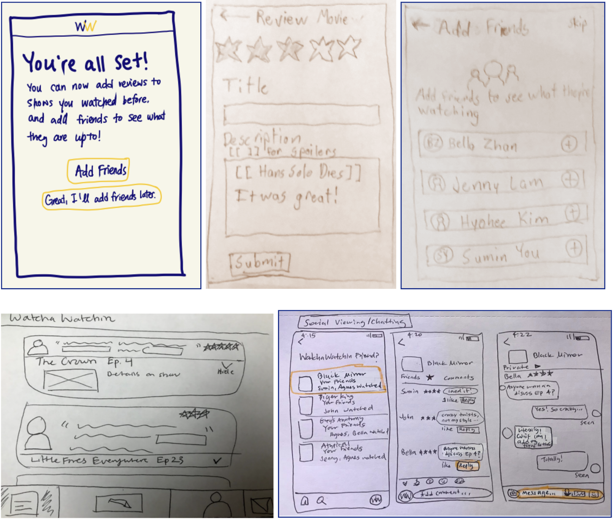
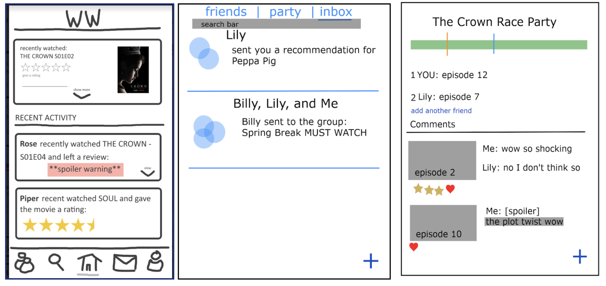

WatchaWatchin
WatchaWatchin is an app for sharing reactions to tv shows and movies from popular streaming services with friends.
SKILLS
Design Research, Paper Prototyping, Wireframing with Figma, App Design
PROJECT
COMP_SCI 314: Technology and Human Interaction Course Project
TEAMMATES
Hyohee Kim, Agnes Lee, John Nguyen, Sumin You, Bella Zhan
TIMELINE
4 weeks
WatchaWatchin is a way for users to comfortable discover and explore what tv shows and movies to watch next based on friend recommendations and reviews. Currently, users face constant choice anxiety from the large selection of media on streaming services like Netflix, Disney+, and Hulu. Exploring tv shows and movies from friend recommendations is a more trustworthy approach to finding what to watch and enjoy next.
My role in the project included facilitating collaborative whiteboarding sessions to plan features of the app, creating the initial paper-in-screen prototype , user testing, refining the Figma wireframe based on feedback, and presenting the finished demo.

Initial Sketches: We completed the WatchaWatchin project entirely remote due to social distancing guidelines imposed in response to the COVID-19 global pandemic. Each of us drew out potential screens to illustrate possible features of WatchaWatchin that would encourage friends to engage with each other's viewing activity.

User Flow: I facilitated a Zoom meeting where we each presented our individual sketches and discussed their inclusion in WatchaWatchin. Using a whiteboard, we sketched out screens, identified navigation links between them, and focused on particular aspects we wanted to test. The images show some examples of screens for the proposed ActivityFeed and WatchParty features.
Paper-In-Screen Prototype: From the collaborative whiteboarding session, I created our initial prototype by drawing sketches of the screens and linking them together using the Prototyping On Paper (POP) app. The app allows users to test paper prototypes remotely by generating a shared link to the linked demo.
Activity Feed
Users share and view reviews and recommendations for tv shows and movies that they or their friends have written. Reviews expand into separate screens to avoid crowding information onto the smaller mobile screen.
Discover
The streaming service specific filter for tv shows and movies help narrow down potential results to those available to watch for them. To prevent confusion about WatchaWatchin offer in-app streaming, icons for the specific services are only shown on the details screen and trailer videos were removed from the interface.
SocialWatchParties are friend groups watching the same tv show or movie and allow users to leave episode or time-specific comments, reactions, and predictions.
ProfileUsers can save items to watch lists for later viewing or to curate personalized watching experiencs to share with friends.
Testing & Feedback: We developed a set of tasks and materials for participants to test with. After signing the consent form, our participants tested core functions of our app which included adding a frequently-used streaming service, adding friends, adding to their watch list, looking through their friends’ reviews, composing their own review about a show/movie from their feed page, and creating a watch party for a show with two friends on the social page. We conducted a within-subject study because all users would be testing every screen of the prototype and members were not selected randomly.
Feedback from testing led to the following redesign for the Figma Wireframe
Changed WatchParty to WatchClub: Participants thought that they would have to stream and watch movies/shows with friends in real-time. Changing the feature name to WatchClub would be more aligned with a book club setup that allows friends to watch and discuss asynchronously.
Improved internal consistency: To help reduce user memory load, add icons were replaced by a plus symbol across screens for better consistency. The feed should also allow for expanding content to a new screen to avoid having an over-crowded interface.
Video Demo:
WatchWatchin Web App
Based on our findings from the project, we are currently in the process of implementing the WatchaWatchin web app using React web development and the Firebase Realtime Database. Feel free to check out WatchaWatchin at https://find-watchawatchin.web.app/ or the WatchaWatchin GitHub repository.